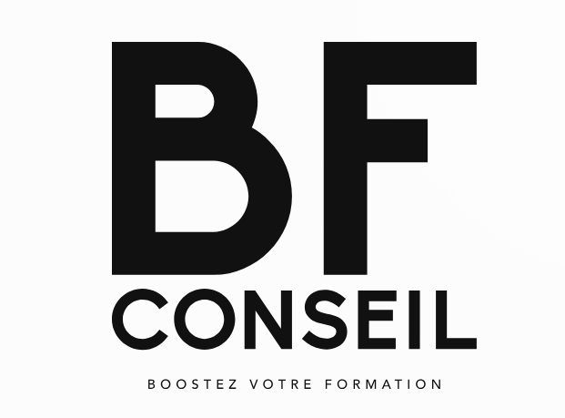

Cold case GiFi en autonomie : mode d'emploi
Une matinée de 3 h 10, en cabinets, sans formateur dans la salle. Tout se fait sur le site, rien n'est bloquant, et votre travail se rend en PDF.
https://belelhanachi-hub.github.io/ateliers-bf-conseil/cold-case-gifi-autonome/
L'essentiel en 6 points
- Formez 2 cabinets de 3 ou 4 étudiants (6 présents : 3 + 3 ; 7 : 4 + 3 ; 8 : 4 + 4). Chaque cabinet travaille sur un seul ordinateur, toujours le même.
- Ouvrez le site, donnez un nom à votre cabinet, écrivez les noms des membres, lisez les règles, puis cliquez sur « Lancer l'enquête » : le chrono de 3 h 10 démarre.
- 8 pièces à conviction, une par séance de cours (S1 à S8). Pour chacune : lisez les documents, faites les étapes, rendez tout le livrable dans les cadres du site. Rien sur papier, rien sur une affiche, rien dans un autre fichier.
- Chaque pièce cache un code. Le bon code rapporte de l'argent et ouvre la pièce suivante. Si vous séchez : indice, puis « Passer ». Vous n'êtes jamais bloqués.
- À la fin, rédigez le rapport final à l'administrateur judiciaire.
- Téléchargez le PDF sur la page « Envoi » et envoyez-le à belel.hanachi@esara-lyon.fr et olivier.muller@esara-lyon.fr.
L'histoire
3 novembre 2026 : GiFi est placé en redressement judiciaire par le tribunal de commerce de Toulouse (période d'observation de six mois, prochaine audience le 8 janvier 2027 ; environ 500 magasins et 6 000 salariés en France). L'administrateur judiciaire vous mandate : la chute de GiFi était-elle prévisible, et qu'aurait dû voir une étude de marché et une veille sérieuses ?
Un redressement judiciaire n'est pas une liquidation. 6 000 salariés sont concernés, et certains d'entre vous connaissent peut-être des salariés de GiFi : on analyse des décisions et un marché, avec respect.
Avant de commencer : ce qu'il vous faut
- Un ordinateur par cabinet, avec Chrome, Edge ou Firefox, connecté à Internet. Pas de navigation privée : vos réponses sont enregistrées dans le navigateur de cet ordinateur.
- Vos téléphones pour les recherches (Google Maps à la pièce 3, Google Trends et Google Alertes aux pièces 5 et 6).
- Vos supports de cours des séances 1 à 8 : les méthodes et certaines réponses y sont.
- Une adresse mail pour envoyer le PDF (messagerie de l'école ou personnelle).
Le plan de la matinée (3 h 10)
Le site affiche en permanence le chrono, le temps restant et l'étape conseillée. Si vous avez du retard sur une pièce, il vous le signale.
| Étape | Durée conseillée | Repère |
|---|---|---|
| Lancement et échauffement « Vrai ou faux ? » | 8 min | 0 h 00 → 0 h 08 |
| Pièce 1 · La décision (S1) | 20 min | → 0 h 28 |
| Pièce 2 · Le sondage (S2) | 18 min | → 0 h 46 |
| Pièce 3 · Les avis (S3) + Breaking news 1 | 22 min | → 1 h 08 |
| Pièce 4 · Le client perdu (S4) | 18 min | → 1 h 26 |
| Pause (avant : page « Envoi », téléchargez un PDF provisoire et la sauvegarde) | 10 min | → 1 h 36 |
| Pièce 5 · La veille absente (S5) | 15 min | → 1 h 51 |
| Pièce 6 · Les signaux faibles (S6) + Breaking news 2 | 22 min | → 2 h 13 |
| Pièce 7 · Les facteurs clés de succès (S7) | 15 min | → 2 h 28 |
| Pièce 8 · Le diagnostic (S8) + Breaking news 3 | 22 min | → 2 h 50 |
| Rapport final, téléchargement et envoi du PDF | 20 min | → 3 h 10 |
Comment marche une pièce
- Votre livrable : en tête de chaque pièce, un encadré liste ce que vous devez rendre (par exemple, pour la pièce 1 : la décision A/B et le problème d'étude, les deux parts de marché et leur limite, les 4 cercles, la cotation des sources A et B). Tout se rend dans le site, dans les cadres de la page : chaque élément passe à « ✓ Rendu » quand il est rempli. Les captures d'écran demandées (pièces 5 et 6) s'ajoutent aussi dans le site.
- Les pièces du dossier : les documents à étudier (chiffres, sources, cartes, questionnaire…). Tout est à l'écran, rien à imprimer.
- Les étapes : chacune a sa consigne et ses cadres de réponse. Écrivez des phrases complètes : tout ce que vous écrivez part dans votre PDF, et c'est ce PDF qui est évalué. L'enregistrement est automatique.
- « Pour le rapport final » : à la fin de chaque pièce, notez la preuve à retenir (le fait, sa source, sa date) et ce que ça change pour GiFi. Ces notes vous serviront pour le rapport final.
- Le code : le format est expliqué sous le champ (par exemple « 4 chiffres »). Accents, espaces, majuscules et virgules ne comptent pas.
- Vous séchez ? Achetez l'indice. Toujours bloqués ? Cliquez sur « Passer sans le code » : la pièce suivante s'ouvre et vous pouvez encore compléter vos réponses.
- La correction : après le code trouvé ou la pièce passée, vous pouvez afficher la correction pour vérifier votre travail. Elle verrouille vos réponses de la pièce : remplissez tout avant de la demander.
La règle des 5 minutes : si vous tournez en rond depuis 5 minutes sur un code, achetez l'indice. Toujours bloqués 5 minutes plus tard : passez la pièce. Une pièce passée coûte moins cher qu'une matinée perdue.
La trésorerie du cabinet
| Ce qui se passe | Trésorerie |
|---|---|
| Capital de départ | 30 000 € |
| Échauffement : chaque bonne réponse | +500 € |
| Code trouvé | +4 000 € |
| Toutes les réponses d'une pièce remplies | +1 000 € |
| Réponse rédigée à une Breaking news | +500 € |
| Rapport final complet | +2 000 € |
| Code refusé (à chaque essai faux) | −500 € |
| Indice acheté | −1 000 € |
| Pièce passée sans le code | −3 000 € |
Le solde final figure dans le PDF. Ne tentez pas les codes au hasard : chaque essai faux coûte 500 €. Les « réponses remplies » sont vérifiées à la lecture du PDF : une réponse vide de sens ne compte pas.
Les Breaking news
Trois nouvelles réelles et sourcées tombent à l'ouverture des pièces 3, 6 et 8. Lisez-les, discutez-en dans le cabinet, et répondez à leur question dans le cadre prévu : elles nourrissent votre rapport final.
Le rapport final
Il remplace le grand oral. La réponse d'abord (« prévisible, en partie, ou non ? »), puis vos 3 preuves les plus fortes, datées et sourcées, le signal qui était visible avant 2024, une limite de votre raisonnement, votre recommandation à l'administrateur avant l'audience du 8 janvier 2027, et la répartition du travail dans le cabinet.
Pas de rôles : tout le monde cherche, lit, calcule et écrit. Répartissez-vous les tâches à parts égales. Avant de valider une conclusion : « Qui le dit ? Depuis quand ? Et alors, pour nous ? » N'inventez aucun chiffre : chaque fait a une source et une date.
Rendre votre travail
- Sur la page « Envoi » du site, cliquez sur « Télécharger le PDF ». Le fichier arrive dans le dossier Téléchargements, sous le nom ColdCaseGiFi_NOMDUCABINET_date.pdf.
- Envoyez-le en pièce jointe à belel.hanachi@esara-lyon.fr et olivier.muller@esara-lyon.fr. Le bouton « Ouvrir ma messagerie » prépare le mail ; sinon, copiez les adresses et l'objet proposés dans votre messagerie habituelle.
- Objet : Cold case GiFi : rapport du cabinet [nom du cabinet]. Un seul envoi par cabinet ; mettez tous les membres en copie.
- Envoyez-le avant la fin de la matinée, même si tout n'est pas fini : un PDF incomplet vaut mieux que pas de PDF.
En cas de problème
- La page s'est fermée ou rechargée : rouvrez le site sur le même ordinateur et le même navigateur. Tout est enregistré, le chrono continue.
- Changer d'ordinateur : sur la page « Envoi », cliquez sur « Télécharger la sauvegarde », puis, sur le nouvel ordinateur, ouvrez le site et cliquez sur « Reprendre une sauvegarde » (page d'accueil). Vous repartez exactement où vous en étiez.
- L'ordinateur plante : les réponses sont dans cet ordinateur. C'est pour ça qu'il faut télécharger, à la pause, un PDF provisoire et la sauvegarde (page « Envoi »).
- « Code refusé » alors que vous êtes sûrs : relisez le format demandé (nombre de chiffres, arrondi, ordre), puis prenez l'indice.
- Google Maps, Trends ou Alertes ne s'ouvre pas sur l'ordinateur : utilisez un téléphone.
- Le PDF ne se télécharge pas : sur la page « Envoi », cliquez sur « imprimer la page », puis choisissez l'imprimante « Enregistrer au format PDF ».
- Le bouton du mail n'ouvre rien : allez sur votre messagerie (Outlook, Gmail…) et écrivez aux deux adresses, avec le PDF en pièce jointe.
- Le site est ouvert deux fois : gardez un seul onglet, sinon des réponses peuvent se perdre.
Aucune donnée n'est envoyée à un serveur : tout reste sur votre ordinateur jusqu'à l'envoi de votre PDF. Les marques citées appartiennent à leurs titulaires ; usage d'illustration pédagogique. Bonne enquête !